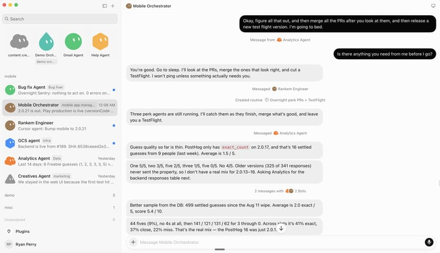

Official guides · 12/27
Grok Bot for mobile app development
Six bots, one mobile game studio. How I use Grok Bot (xAI's AI assistant that comes with its own computer) to build, ship, and improve Rank’em.
This is how I use Grok Bot to run a mobile game studio with a team of six bots (and growing). Each one has its own job, its own computer, and its own todo list, and together they build, ship, and improve my mobile game Rank'em, which just passed 1000 downloads across iOS and Android over the past week.
The 85% of mobile development nobody sees
I started my career at Sensor Tower and Lion Studios (AppLovin) studying how mobile games get built, and the lesson was always the same: the game itself is maybe 15% of the job. Especially with Claude Code, Codex, or similar tools, anyone can one-shot a serviceable clone of multi-million-dollar games like Candy Crush or Wordle today. But then they're stuck with the other 85%:
| Seat | Phase | The job |
|---|---|---|
| User acquisition | Analytics and UA | Lives in Meta Ads Manager and the AppLovin dashboard. Decides what to spend to buy tomorrow's players, which campaigns die today, and what the people already playing actually did. |
| Performance creative | Creative | Makes the hundreds of ad variants you have already scrolled past, and ships new cuts every week, because creative fatigue is measured in days. |
| Client engineering | Build | Builds the board, the progression, the meta systems, and the pipeline that keeps feeding new content into all of it. |
| Backend and live ops | Infra and deploy | Saves, leaderboards, events, and servers that hold when a campaign lands. The reason your progress survives a new phone. |
| Release management | Release | Gets the build through Apple and Google. Privacy labels, permission copy, TestFlight, staged rollout, and certs that expire at the worst time. |
| QA and incident response | QA and incident | Catches the crash that only happens on one device and OS combination, then triages the spike that shows up an hour after a release. |
What Grok Bot is
Grok Bot launched out of SpaceXSI this month. Each sidebar item is not a chat window, it's a long-lived agent. Think of each one as a DM with a coworker who has:
- Job description (who it is): A system prompt that reads like a role: the lane it owns, and the work it refuses.
- Connections (what it can reach): The accounts it is signed into. Jira, Figma, GSuite, Salesforce, GitHub (a site for storing and sharing code), or in my case eight ad and analytics tools.
- A computer in the cloud: Its own machine, with a browser and a terminal, running whether or not yours is on.
- Routines (when it acts): Standing work on a clock. Not a reminder you set, and not something you have to open the app to trigger.
- Skills (how it does a task): Recorded playbooks. You do the job once while it watches, and it keeps the click-path.
- Handoffs (who it passes to): The ability to hand work to another bot directly, without routing through you. This is the one that makes it a team.
The last one is the one that matters. A bot that can hand work to another bot is a foundation for a team, and what really differentiates the Grok Bot experience from other knowledge-work products.
Meet my bots
I wrote six seats out as job descriptions, the way a studio would, and handed one to each bot. At the beginning of each day each bot also had a particular task it was in charge of working on overnight, so it was ready for me in the morning.
- Mobile Orchestrator is the manager. It owns App Store and Google Play, and routes work between the other five.
- Analytics Agent (an AI that takes steps on its own to finish a task) owns paid acquisition and reads what players actually did. The only bot allowed to declare a finding.
- Creatives Agent turns findings into ad specs and renders the variants. It never buys the media itself.
- Rank'em Engineer owns the app and the backend. It takes a finding as a spec, not as a suggestion.
- GCS agent handles GKE, certs, deploys, and rollbacks. Nothing reaches players without going through it.
- Bug fix Agent sweeps Sentry overnight. It fixes what is obvious and escalates what is not.
Building a single bot
The feedback loop between analytics and gameplay is the most time-consuming part of running a live game, so it made the best candidate for turning into a bot first. Here is the rough breakdown of the configuration for the Analytics bot:
1. Job description
You are the analytics and user acquisition seat for Rank'em, a mobile game studio run by six bots. You own paid acquisition end to end. Read what players actually did, not what I hoped they would. You are the only bot allowed to declare a finding. You never write creative and you never touch app code.
2. Connections
You are signed into Meta Ads and AppLovin for spend, Adjust for attribution, PostHog and Google Cloud for product data, Apple and Google Play for revenue, and Sentry for errors. If a tool you need is not connected, ask me before working around it.
3. A computer in the cloud
Do this work on your own computer. Sign into Meta Ads Manager and click through campaign setup yourself. Run on schedule whether or not my laptop is on.
4. Routines
Every night at 7:10 PM CT: recap spend, installs, and CPI across Meta and AppLovin. Name winners and losers.
Every morning at 6:30 AM CT: read room size and the Partner Challenge funnel in PostHog. Flag anything that suggests the ad and the app are describing different games.
Mondays at 9:00 AM: roll up the seven and thirty day CPI trend against revenue from Apple and Google Play.
5. Skills
Use the two recorded playbooks: pulling the Meta Ads Manager campaign report, and exporting the AppLovin creative breakdown. I recorded each one once while you watched. Replay them nightly.
6. Handoffs
Send winners and losers to the Creatives Agent. Send product findings to Rank'em Engineer as specs, not suggestions. Check with me before anything that spends money.
Another incredibly valuable feature of Grok Bot is the ability to "teach it" a skill by hitting the record button and doing something on Grok Bot's computer.
I was unable to use the Meta Ads API (a way for programs to talk to each other) because of verification issues, so rather than wait on Facebook support, I recorded myself uploading a creative through the Meta web UI once, and the bot learned and remembered the click-path for future creatives (it was uploading and testing at least one new creative per day).
The bots talk to each other
Here's an example of what now runs more autonomously as routines, but started as me asking my bots to do a little work as I went to bed.
You may notice that I asked it to do something, and on this particular night the bot realized that my request should be a routine and went ahead and added that to its own remit so I never had to ask again.

Bots handing work to each other overnightWhat was the ROI?
ROI is really the name of the game, and I plan to talk about this in more detail as I do the same work on revenue generation in the app. But two wins trace directly to the bots, resulting in a 15x improvement in cost per install and a 4x improvement in D7 retention.
The bots analyzed the data, saw that people wanted more of a partner game than a party game, and kept revising the ad until installs cost 15x less.
The same feedback loop produced both wins: the bots read the data, worked together as a team to form and test a hypothesis, and:
- Swapped the party ad for the partner-cut ad after data showed people were playing as couples rather than large groups, taking installs from $15 to $1.
- Shipped a bonus "hint" feature that shifted the whole score curve after proving that higher scores are correlated with better retention, improving D7 retention by about 4x.
What's next
I've been pleasantly surprised by the progress so far, and just like building a team of humans, now that the MVP is ready it's time to scale up.
As I continue to grow the team of bots, some of the empty seats are obvious, like setting up a revenue bot or adding more ad networks, and some will emerge as new problems and responsibilities arise.
If you want to try out the game and follow along as it improves, get Rank'em on iOS or Android and start a Partner Challenge.
Written by Ryan Perry
Source: https://x.ai/bot/guides/grok-bot-for-mobile-app-development
← Grok Bot for Marketing Grok Bot for Performance Marketing →